吴地时光机 · 苏州文史研学 · 官署水巷篇
从臬台衙门到水巷新街
江苏按察使署 · 剪金桥巷 · 学士街 · 苏作牙雕
研 学 线 路 规 划 ｜ 合 作 方 版
一条约 1 公里的步行线，把苏州的三层身份串在一起：清代江苏省城的官署、老街巷里的水与地名、手上功夫的非遗传承。全程 3 小时、六站，含一场 40 分钟林则徐专题、两处文化打卡点、一件学员亲手刻成并带走的方牌。
一 城 两 图 · 一 刻 千 年
壹
方案速览 · 定位与亮点
一条巷子，看苏州的三层身份：省城的官署、水巷的生活、苏作的匠心。—— 不靠园林立线，靠「身份」立线
本线面向对苏州文史有兴趣的成人、亲子与文化机构团体，走的是古城西南片低调但密度极高的一段：从省级官署旧址出发，穿过一条 504 米的新开街巷，沿干将路看一段消失的文脉，最后坐进非遗馆里动手完成一件作品。
① 一位勤政务实的父母官，一位民族英雄本系列以林则徐为主线人物。他在苏州不是路过：1823 年任江苏按察使、1832—1836 年任江苏巡抚，前后近七年。苏州的禁烟实践在前，1839 年虎门销烟在后——这个顺序让本线不只是名人打卡。
② 两幅可以对照的城图起点衙门长廊里是 1:1 黄杨木雕《姑苏繁华图》，出巷口路边是砖雕复刻《平江图》。一张讲清代苏州有多旺，一张讲南宋以来的城址没动过；两处相距不到 600 米，同一个上午看完，不折返。
③ 一条有独家考据的巷子剪金桥巷的桥早已不存，宋《平江图》上却还能找到「剪金桥」三个字和桥下的河线；清乾隆至清末地图上只剩一座旱桥。河先没、桥后没、地名还在——图和地八百年对得上。
④ 一件带得走的成品末站 45 分钟手作，学员在牛骨方牌上用电动刻刀刻一个字或自己喜欢的图案，零基础可完成，成品随身带走。半天行程从「看」收到「做」，也是本线与纯步行讲解团最大的差别。
贰
行程 · 3 小时时间表
按 9:00 集合推演，12:00 收队。对外通知统一写「约 3 小时，含 45 分钟手作体验」。
| 时间 | 站点 | 时长 | 内容 |
|---|
| 9:00–10:00 | ① 江苏按察使署旧址（林则徐纪念馆） | 60′ | 林则徐专题讲解 40′ ＋ 木雕长卷 10′ ＋ 庭院古树 10′ |
| — | ② 畅园（庙堂巷 22 号 · 预约入内） | 待定 | 一池居中、曲桥与绕池长廊；出园左转向西即进剪金桥巷 |
| 10:00–10:35 | ③ 剪金桥巷 | 35′ | 巷史与街坊活化 20′ ＋ 砖雕《平江图》 8′ ＋ 洪钧祖居指认与老宅观察 7′ |
| 10:35–10:50 | ④ 学士街 · 街名的由来（行进式） | 15′ | 街名渊源、王鏊、藩台与臬台的呼应 |
| 10:50–11:00 | ⑤ 状元桥前 · 苏州第二文脉 | 10′ | 两条文脉、干将路改造、桥名四变 |
| 11:00–12:00 | ⑥ 祥韵牙雕艺术馆 | 60′ | 展陈讲解 15′ ＋ 刻方牌手作 45′ |
叁
动线一览
一条动线 · 六站 · 约 1 公里
壹 · 按察使署60′ · 起点→
贰 · 畅园一池山水 · 预约→
叁 · 剪金桥巷平江图 · 35′→
肆 · 学士街街名由来 · 15′→
伍 · 状元桥前第二文脉 · 10′→
陆 · 祥韵牙雕手作 45′ · 终点
主课与打卡点所在站动手体验站
起点：道前街 170 号（今苏州林则徐纪念馆，免费开放）｜终点：干将西路 227 号祥韵牙雕艺术馆（近地铁 1 号线养育巷站）。全程平路，两处室内场馆可避雨，巷段为露天步行。
肆
六站 · 核心要素与亮点
每站只列对外需要讲清楚的部分：这站看什么、为什么值得放进线路。
本线 · 壹 · 60 分钟
江苏按察使署旧址 （今苏州林则徐纪念馆）
全省刑狱中枢 × 林则徐专题 × 木雕长卷 × 三百余年古玉兰
核心要素
清代提刑按察使司衙门，俗称臬台衙门，主管全省刑狱；与巡抚、布政使并称「三大宪」，是苏州作为江苏省城的一处实证。
林则徐专题 40 分钟为本线主课，讲他在苏两任近七年、从苏州禁烟到虎门销烟的先后，兼及治水赈灾与馆内展陈（含苏绣《林则徐》）。
长廊 1:1 黄杨木雕《姑苏繁华图》（作品实物署名冯文土）；中庭二乔玉兰树龄 320 余年，与桂花对植寓「金玉满堂」。
本站打卡亮点
《姑苏繁华图》里画的「江苏按察使司」，就是脚下这块地——画里画外同一个衙门，是全卷唯一能与今天原址对上的省级官署。
纪念馆 2026 年焕新开放，展陈面积由 518 ㎡ 扩至 1117 ㎡；免费开放，起点条件成熟。
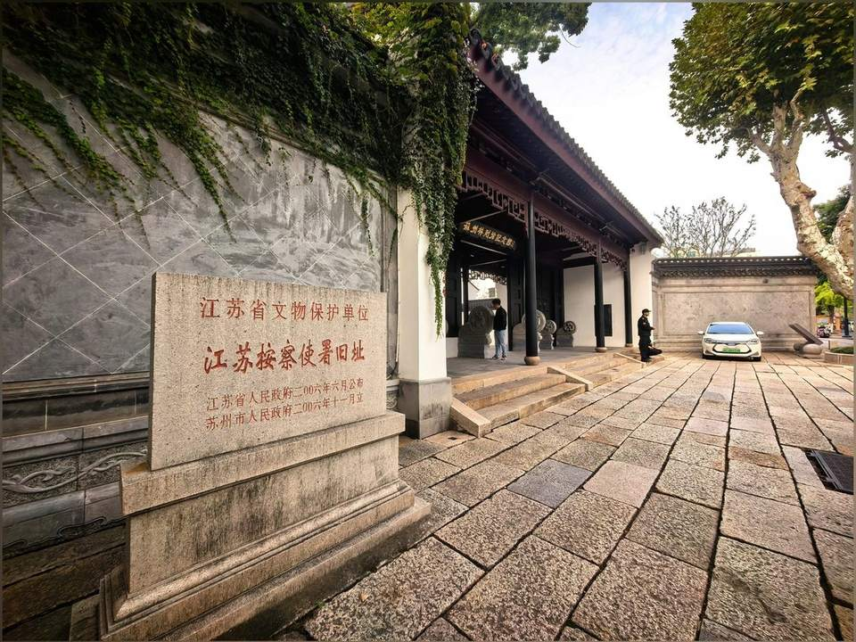
道前街 170 号 · 江苏按察使署旧址大门（今苏州林则徐纪念馆）
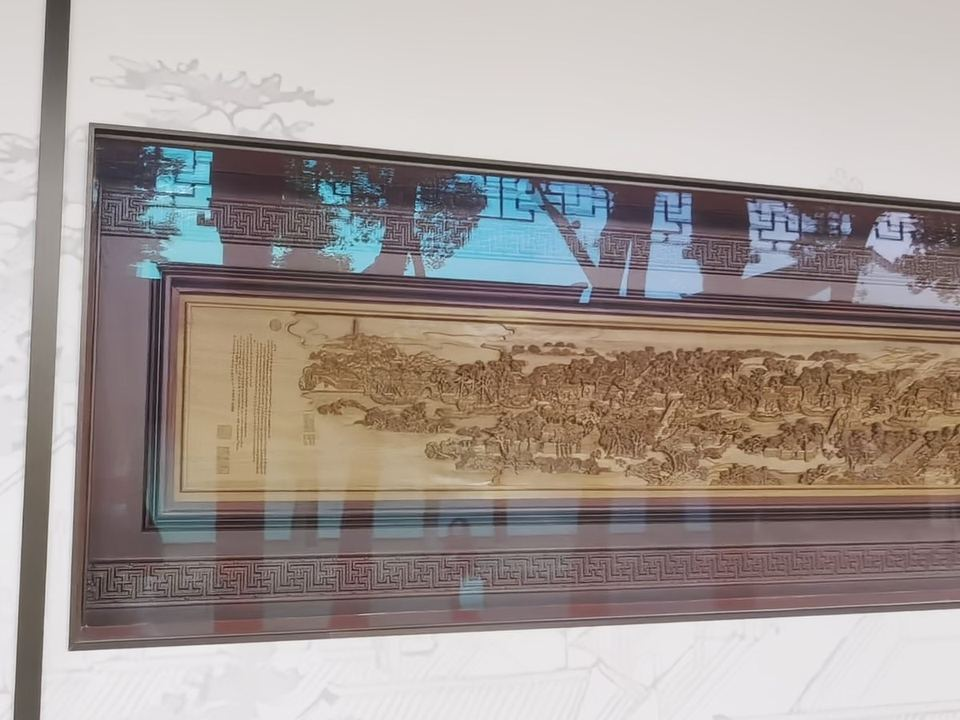
通道西侧长廊 · 黄杨木雕《姑苏繁华图》
本线 · 贰 · 预约入内
畅园 · 一池居中，步移景异
庙堂巷 22 号 × 清代小园 × 曲桥长廊 × 苏州园林名录
核心要素
畅园在古城西侧 32 号街坊的庙堂巷 22 号，始建于清代，是江南小型私家园林的代表。园林约 2.2 亩，一方水池居中，厅堂、曲桥与绕池长廊层层环抱，走一圈步步换景。
童寯《江南园林志》说「城中尚有小园，以畅园、壶园为最」；刘敦桢称它「园景丰富而多层次」。它还被 1:1 复刻进北京中国园林博物馆，列入《苏州园林名录》，1988 年修复。
本站打卡亮点
从按察使署旧址后门出来即达，出园左转向西便进剪金桥巷——一座清代官署、一座清代小园、一条老巷，连成一条不折返的线。
站在池边看五折曲桥与绕池长廊：小园不靠大，靠层次，一池水把厅、廊、桥、石都收在一眼里。
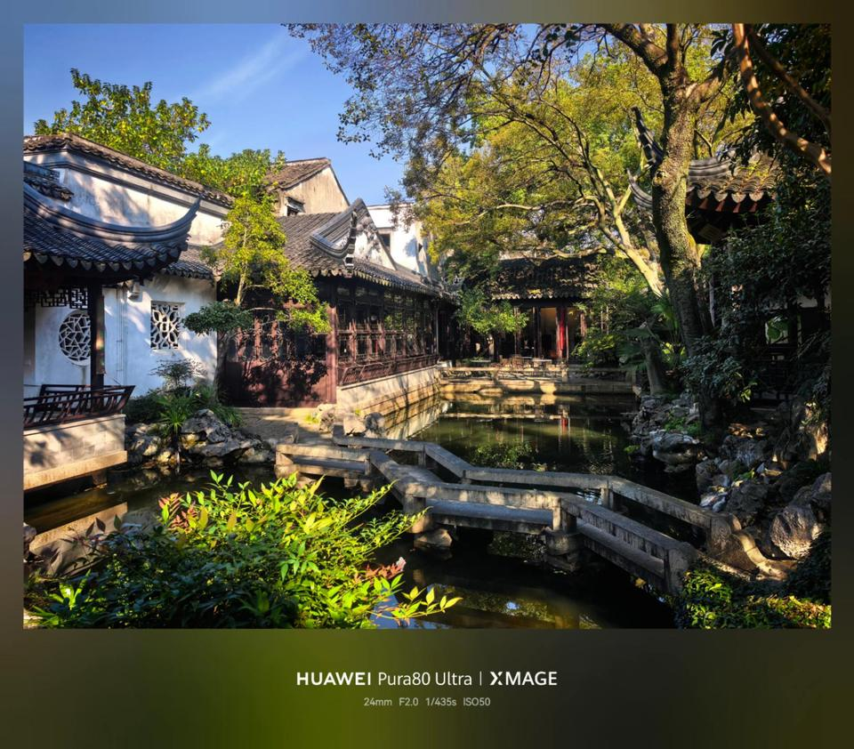
畅园 · 曲桥横跨池上，白墙花窗与厅堂长廊绕池而设
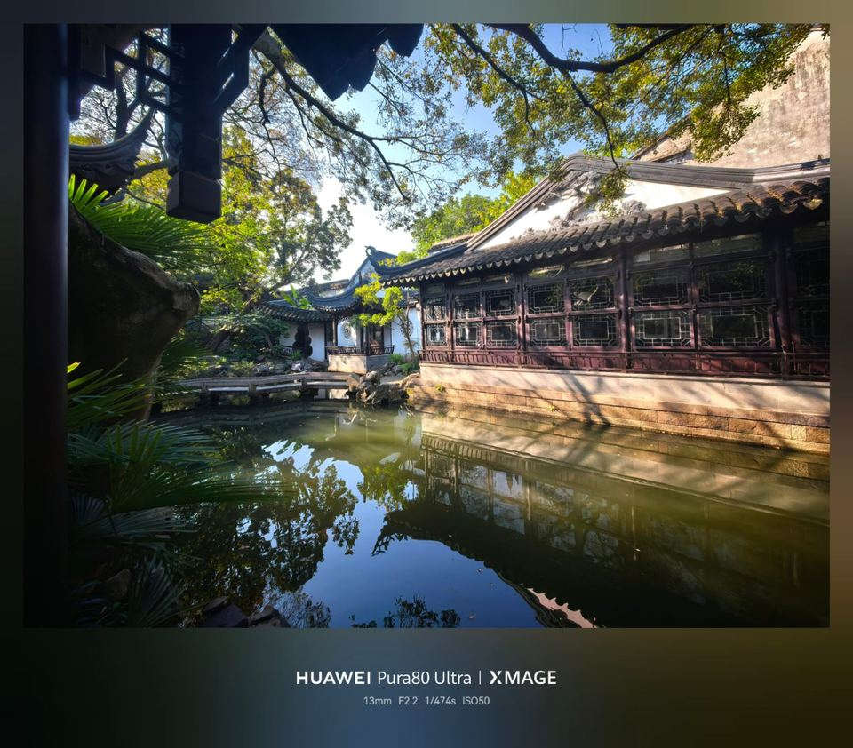
畅园 · 池水映出长廊花窗、亭子与树影
本线 · 叁 · 35 分钟
剪金桥巷 · 504 米与一张八百年前的图
滨水文旅剪金坊 × 巷存桥亡 × 砖雕《平江图》 × 32 号街坊活化
核心要素
南起道前街、北至干将西路，全长 504 米；2022 年启动提升、2025 年 12 月 11 日开街，定名「滨水文旅剪金坊」。38 号原昇平小学改造为「昇平里」，是古城街坊活化的新样本。
巷名来自已消失的剪金桥，原址就在巷与西支家巷相交的三叉路口；巷内还有洪钧祖居（西支家巷口）与成片老宅可沿路指认。
出巷北口的砖雕复刻《平江图》为本线第二处打卡点；其正本为南宋绍定二年（1229）所刻、中国现存最古老的石刻城市平面图，今藏苏州碑刻博物馆。
本站打卡亮点
在砖雕上先找「剪金桥」三个字、再找桥底下那道河线，抬头就是脚下这条巷子——图和地，八百年对得上。
宋图有桥有河 → 清乾隆至清末地图只剩旱桥 → 1920 年代桥亦湮废，只剩巷名。一条巷子把苏州的水、桥与地名讲成一条完整的证据链，属本线独家讲法。
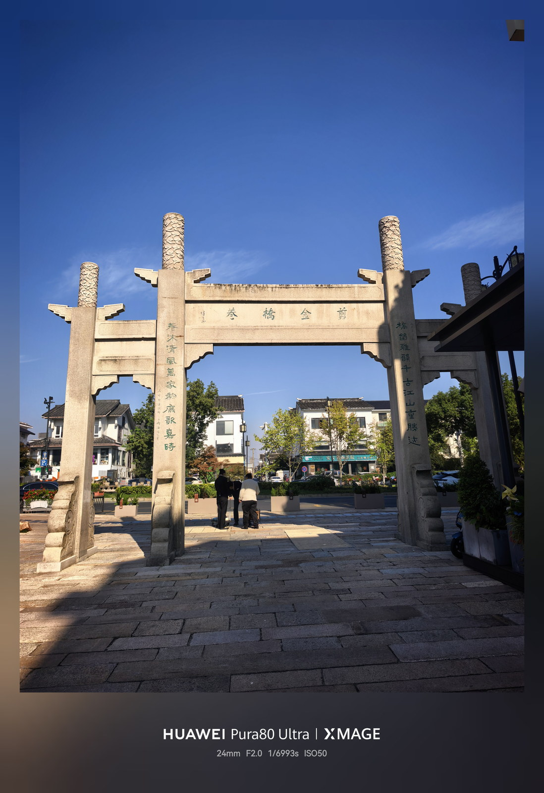
剪金桥巷西侧 · 学士河（第一直河）水巷与码头
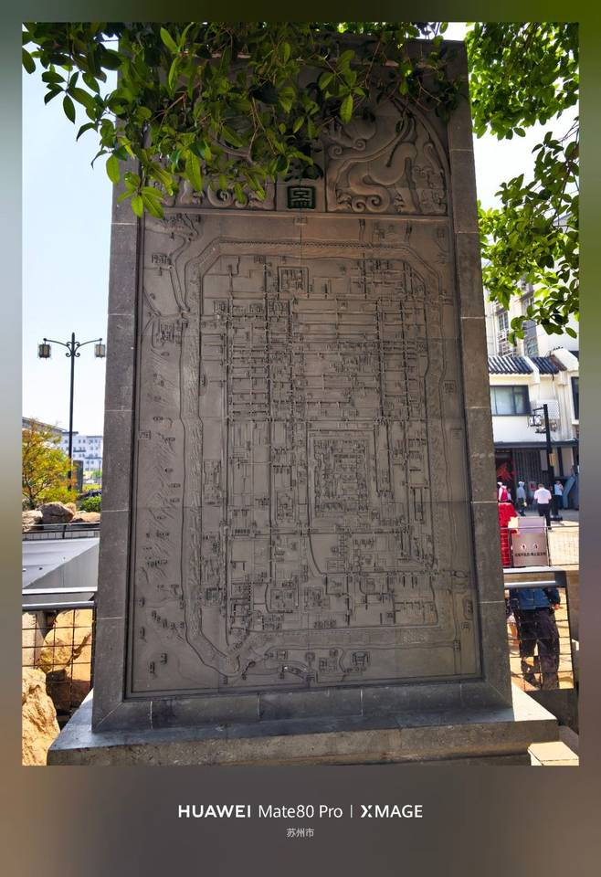
剪金桥巷北口 · 砖雕复刻《平江图》
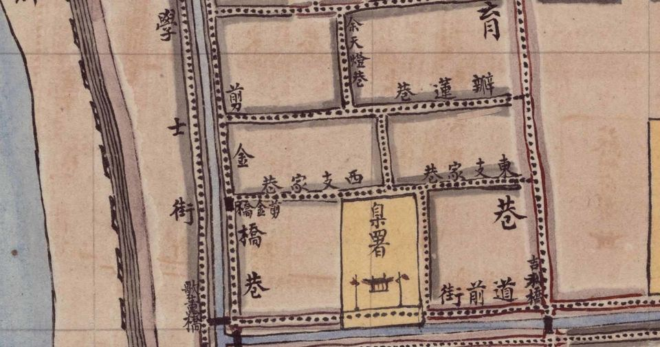
1900 年（光绪二十六年）晚清苏州地图局部 · 图上可见「臬署」「翦金橋」「西支家巷」「東支家巷」
本线 · 肆 · 15 分钟 · 行进式
学士街 · 街名的由来
药市街 → 学士街 × 王鏊 × 藩台与臬台的呼应
核心要素
宋代名药市街，明代因大学士王鏊府第在此，街名由「药市」谐音雅化为「学士」。
街上原有江苏布政使司（藩台衙门），与起点按察使署（臬台衙门）同城呼应，可顺带点出「三大宪」的省城格局；衙门今已不存，只作联想，不设停留。
边走边讲，15 分钟行进式完成，不占独立讲解时段。
本站打卡亮点
一条街名，记住一位明代大学士，也记住苏州做过江苏省城的那一段——看不见的衙门不写成打卡点，看得见的街名才是现场。
空中俯瞰学士街与第一直河（今学士河），河街并行的格局一眼可见
本线 · 伍 · 10 分钟 · 行进式
状元桥前这条路 · 苏州城内第二文脉
人民路／府学文庙 × 干将路／两座县学 × 桥名四变
核心要素
苏州城内有两条文脉：南北向人民路（旧卧龙街）上有范仲淹所创府学文庙；东西向干将路西段旧称通和坊、吴县学前，东段有新学前，分别对应吴县县学与长元县学。
干将路综合改造工程 1992 年 10 月动工、1994 年 9 月 28 日通车，古城段「两路夹一河」；状元桥在 1993 年重建后改名乘马坡桥，此前历经青龙桥→青云桥→状元桥三次更名。
本站打卡亮点
一条 1994 年才通车的新路，西头叫「吴县学前」、东头叫「新学前」——两座县学都不在路边了，地名却把这条干道钉成了一条文脉。
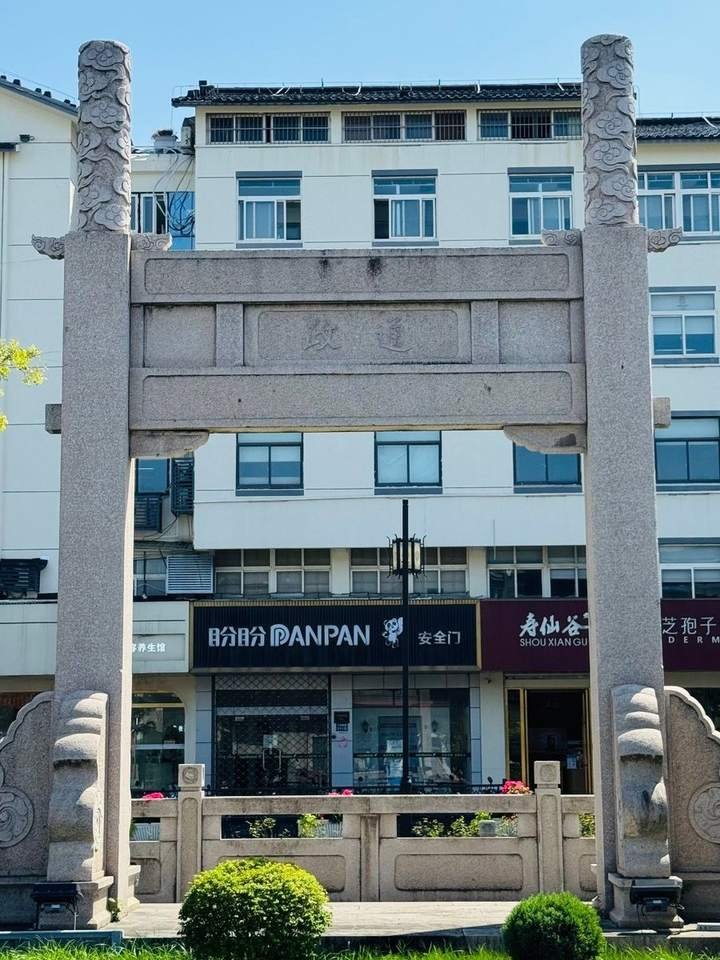
通和坊重建牌楼 · 一面题「政通」
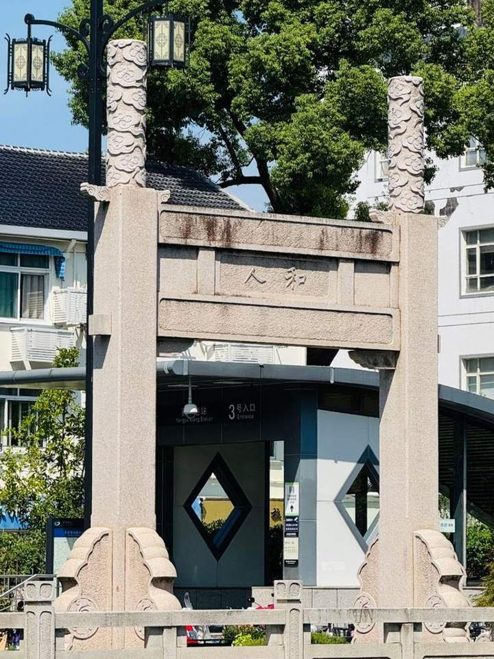
通和坊重建牌楼 · 一面题「人和」
本线 · 陆 · 60 分钟 · 终点
苏州祥韵牙雕艺术馆 · 刻一块自己的方牌
清代吴宅 × 省级非遗保护单位 × 猛犸象牙展陈 × 牛骨牌手作
核心要素
馆址为清代建筑「吴宅」，是苏州地区目前唯一的牙雕技艺类非遗传承单位、江苏省非遗保护单位；2017 年年底停做象牙制品后，展柜作品改用猛犸象牙延续技艺，不涉及猎杀活象。
手作 45 分钟：在牛骨方牌上刻字或刻自己喜欢的图案，使用电动刻刀（笔状、类似牙科电钻），不是传统手工刻刀。零基础不用使劲也能出成品，每人带走一件。
讲解 15 分钟看苏作「精细雅洁」的审美：与上午十二米木雕长卷恰成一宏大一精微的对照。
本站打卡亮点
一上午看的木雕、砖雕、牙雕都是「刻」出来的，最后 45 分钟换成学员自己动手——从看刀到拿刀，还带走一块自己刻的牌，这条线才真正收口。
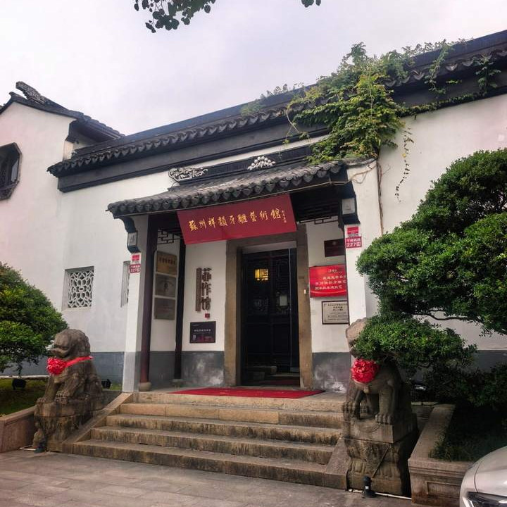
干将西路 227 号 · 祥韵牙雕艺术馆大门
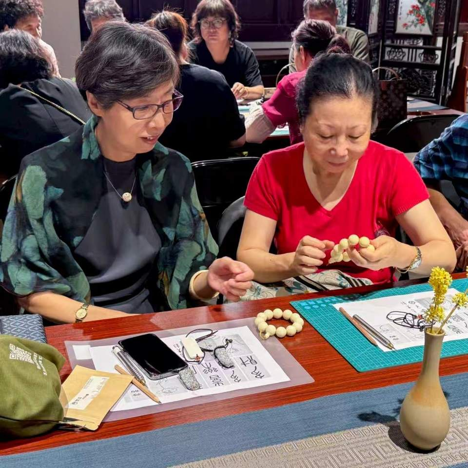
馆内非遗工艺体验课现场
伍
两个文化打卡点 · 招客与传播抓手
一木一石、一大一小，分别落在第一站与出巷口，都在上午走完，不必折返。招生文案、朋友圈与小红书可直接用这两张图。
| 打卡点 | 位置与时段 | 亮点文案 |
|---|
| A · 1:1 黄杨木雕《姑苏繁华图》 | 按察使署通道西侧长廊 · 约 9:50（第一站） | 「画里的衙门，就是我脚下这块地。」 |
| B · 砖雕复刻《平江图》 | 剪金桥巷北入口 · 约 10:30（出巷口顺路） | 「八百年前的地图上，就有我脚下这条巷子。」 |
进门看一幅，出巷再看一幅：一张指清代的繁华，一张指南宋的城址。两张照片拍同一只手，就是这条线最省力的传播素材。
陆
注意事项
落地前需与两处场馆确认的事项，以及本线费用口径。
| 事项 | 口径与安排 |
|---|
| 集合与开放 | 上午 9:00 于道前街 170 号集合（按察使署 9:00 开门）；终点近地铁 1 号线养育巷站，便于散团。 |
| 场馆预约 | 按察使署入馆免费、无需预约；林则徐专题讲解须提前向馆方预约（或由我方主讲）。祥韵牙雕的讲解 + 手作须一并提前预约。 |
| 体验课费用 | 祥韵牙雕研学体验课按最惠协议价 68 元／人结算，为每位学员的保底收费。 |
| 手作物料 | 与馆方核定牛骨方牌尺寸与每人份数、电动刻刀（含备用）数量、指导人手与成品袋。 |
一句收口：本线不依赖园林与门票，靠一位名人、两幅图、一件亲手做的成品立住产品，室内外比例均衡，适合作为常设半日产品排期。